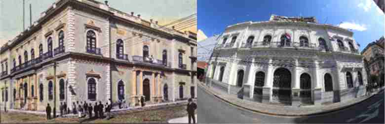

The building was built for the residence of Benigno López Carrillo, one of the sons of the then President of the Republic, Don Carlos Antonio López and Juana Pabla Carrillo. The Italian architect Alessandro Ravizza, known as the Architect of the López family, was hired to carry out the design and construction of said palace in the years 1861-1865.
In 1868 Mrs. Juana P. Carrillo appeared before the Court as heir to her son Benigno, shot in Lomas Valentinas, then in 1871, when Mrs. Juana Pabla Carrillo died, the property was inherited by her daughters Inocencia and Rafaela Lopez Carrillo.
At the end of the War against the Triple Alliance, the house has several successive owners. In 1881, the Catalan Pedro Grau leased it, who together with his brother turned it into the Hispano-American Hotel. At the beginning of the 20th century, the hotel had 72 rooms, banquet halls and even electric light, telephones and fans.
During the Chaco War, the building functioned as a Blood Hospital.
The property is sold again, and has different owners over time, until in 2003 the Banco de Asunción, who was its owner at that time, requested its voluntary liquidation from the Central Bank of Paraguay and sold it to the Paraguayan State that acquires it through a donation from the Government of Taiwan. The government intended it to be the new headquarters of the Ministry of Foreign Affairs, inaugurated on May 6, 2005.
From an architectural point of view, the building corresponds to the neoclassical style, which was the most representative style of architecture during the government of President Carlos A. López. The main rooms or spaces open onto a central patio. There you can see the gallery on the upper floor with semicircular arches. On the ground floor façade you can see Doric order columns, on the upper floor Corinthian pilasters. On the balconies of the upper floor, the use of cast iron bars with filigree designs can be seen.
The structure of the building is bounded by 30 columns and richly ornamented round arches. The important internal staircase has artistic ironwork railings. The facade plinths and the bases of the access columns and central courtyard were covered with marble plates, carrying out the same treatment on the floors, main access staircase and those leading to the upper floor. The marble floors and coverings were brought from Europe. The bars of the stairs and external balconies that the building has, were worked on at the La Rosada-Ybycuí Foundry.